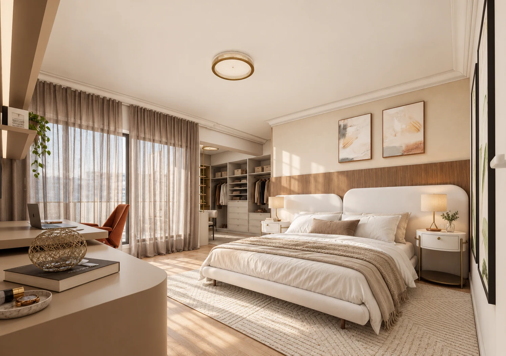
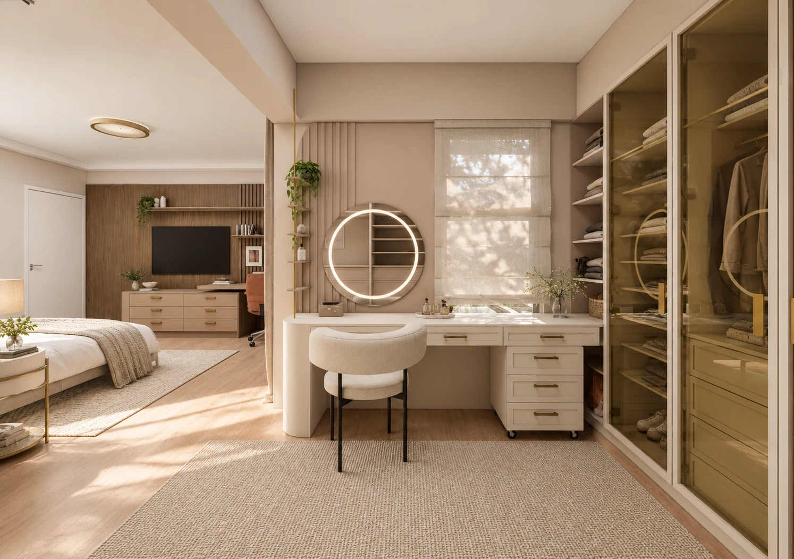
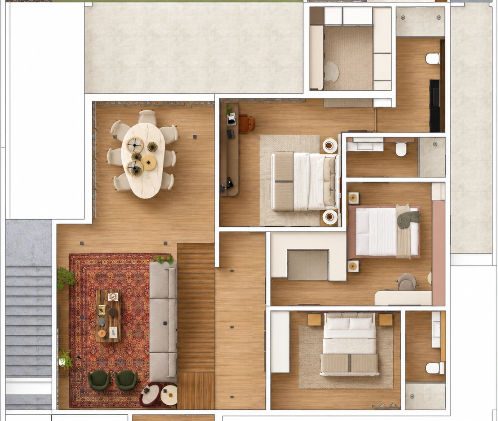

Madeira
Calor, continuidade e desenho.

CASA DEMARCHI ESTUDO PRELIMINAR · ETAPA 02
Entre conquistas, encontros e a natureza.
Uma nova forma de viver as próprias histórias.
UMA CASA. DIFERENTES OLHARES.
Descubra a atmosfera, os materiais e as soluções de cada ambiente.
Conhecer a proposta ↗02Da planta à maquete: escolha um ambiente e veja o projeto ganhar vida.
Explorar os ambientes ↗03Escolha Tour humano, encontre seu personagem e caminhe pela casa.
Entrar na experiência ↗01 / A ESSÊNCIA
A Casa Demarchi traduz uma nova etapa da família em espaços contemporâneos, acolhedores e conectados à natureza.
Na intimidade, o projeto encontra sua expressão mais sensorial: madeira, tecidos, luz suave e uma marcenaria que organiza a rotina. Cada ambiente guarda uma identidade. Todos pertencem à mesma casa.
Do conceito à experiência ↗02 / MATERIALIDADE
Texturas naturais, tons serenos e pontos de personalidade. A matéria como parte da experiência de morar.
Calor, continuidade e desenho.
Areia, off-white e texturas suaves.
Identidade e leveza para Lívia.
Uma conexão com a natureza.
03 / ESPAÇOS ÍNTIMOS
Explore os ambientes, descubra as soluções
e veja como o projeto ganha vida.

CASAL / CLOSET & PENTEADEIRA04 / O DESENHO DO COTIDIANO
Mais do que compor uma imagem, a marcenaria cria lugares para cada gesto. Armazenar, trabalhar, preparar-se e descansar fazem parte de uma experiência contínua.
05 / A CONTINUIDADE DO CUIDADO
Banhos, espaços de vestir e percursos.
A mesma atenção em cada ambiente.
06 / UMA EXPERIÊNCIA COMPLETA
Conheça também a volumetria da residência e os ambientes de convívio.
CASA DEMARCHI · ETAPA 02
A CASA, SOB UM NOVO OLHAR

Preparando sua visita…
Carregando a maquete do projetoNão foi possível abrir a maquete neste navegador.
A maquete facilita a leitura espacial. Os renders apresentam a atmosfera proposta.
Voltar ao conceito ↗